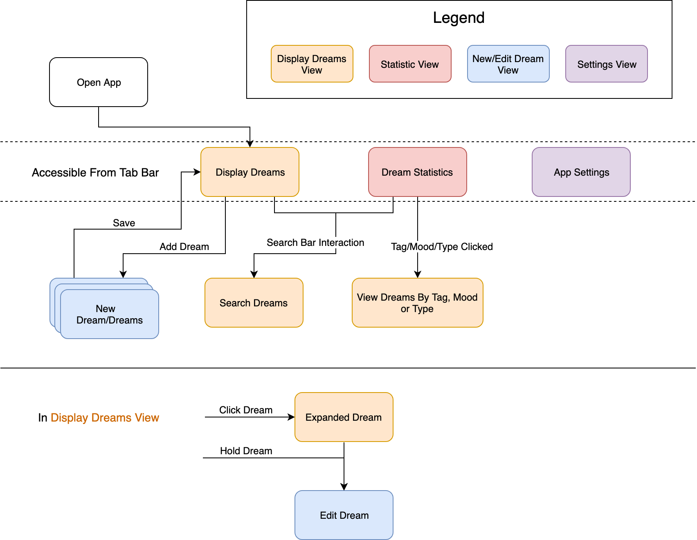
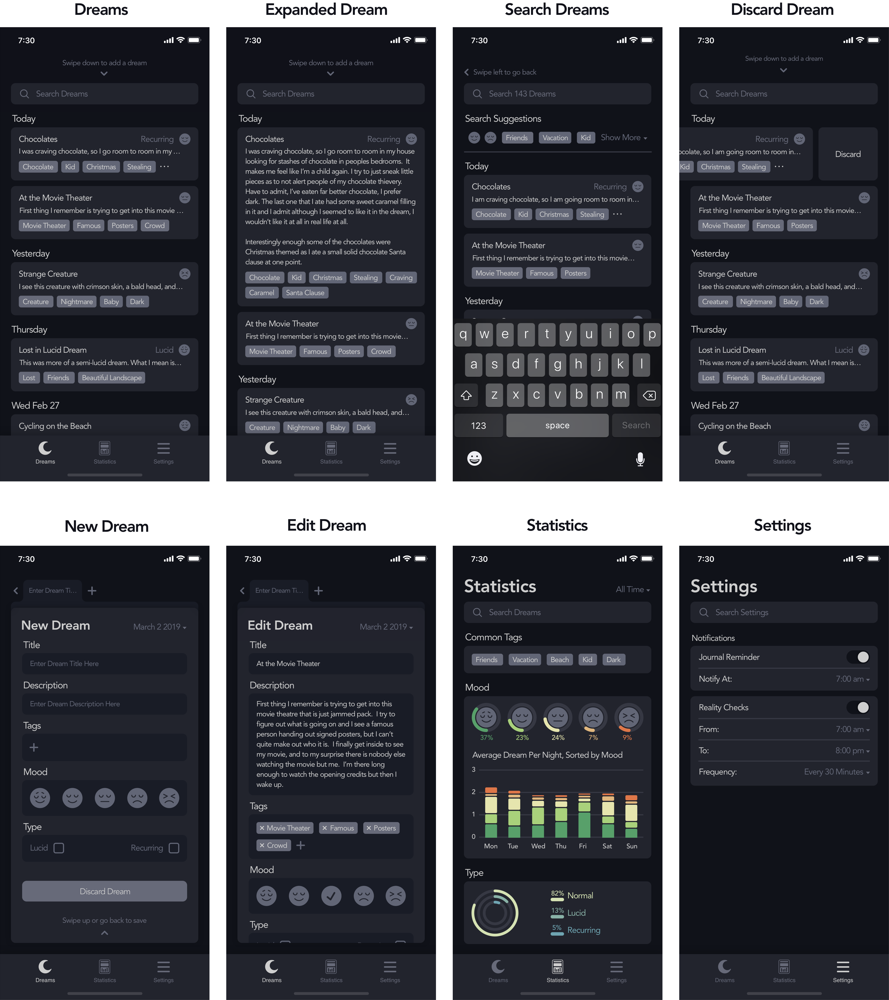

The Problem
Studies have shown that if you write down your dreams right after you wake up then you are more likely to be able to remember them.
Can something be done to aid people to record their dreams in a quick efficient manner before they forget?
(inspired from Weekly UX, a service that sends design challenges to your inbox every week)
Research
Talking to people
I wanted to learn what other people had to say about their own dreams. After all, everyone is different and that could apply to how they remember their dreams.
I asked around 10 of my friends and family some questions about their dream habits. I also asked what they wanted to learn from their dreams. The main things I discovered were:
- Some identified their key issue as waking up to remember multiple dreams in one night
- They did not care to be able to share their dreams with friends through the app (an initial idea that I was unsure about)
- They wanted a quick way to input the general mood of the dream
Looking online
I wanted to ask questions and learn about people who already record their dreams. I looked online and found many reddit threads about lucid dreaming. I learned that people who lucid dream would want a way to classify a dream as lucid and also get periodic reminders to do a reality check (a way of checking to see if you are dreaming or not). These periodic reminders could allow a user to build up a habit of checking to see if they are in a dream or not.
Existing Solutions
I developed an understanding of the current solutions by using a pen & paper and an existing dream journal app to record my dreams for a couple nights. I came up with a list of my own benefits and drawbacks of each method.
Pen & Paper:- Benefits
- Fast to retrieve
- Notes can be written however the user likes Drawbacks
- Requires lighting in the middle of the night
- Cannot apply statistical analysis on your dreams
- Difficult to retrieve a specific dream without scanning through them all
- Benefits
- Good use of sections (title, body, tags) used to quickly record a dream before it is forgotten Drawbacks
- Use of bright colours make it easy for the mind to get distracted
- Complicated user interfaces makes it take too long to navigate the UI
Building the Product
User Stories
After taking all my research consideration I created a list of user stories. The importance was created based on if the story were a necessary feature for the app to function. These stories helped me tailor the wireframes and prototypes to the users needs
| Situation | Task | Importance |
|---|---|---|
| When I Record Dreams | I want to be able to record dreams quickly/easily | HIGH |
| I want to be able to record multiple dreams at once | HIGH | |
| I want to be able to enter my mood | HIGH | |
| I want to be able to input using my voice | MEDIUM | |
| When I Look at my Dreams | I want to see a list of all my dreams | HIGH |
| I want to be able to quickly find an old dream | HIGH | |
| When I Look at my Dream Statistics | I want to see the number of dreams I have a night | MEDIUM |
| I want to see the most common themes | MEDIUM | |
| When I Wake up | I want to be reminded to record my dreams | HIGH |
| When I am going about my day | I want to be periodically reminded to do a reality check to see if I am dreaming | HIGH |
Sitemap
I used the user stories to build a sitemap for the app. This is also where I established a flow through the app.
Wireframes
I used the sitemap to create wireframes for what each view should look like. I created as many iterations on each view as I could. I went back reiterating the versions of each view that I found were most usable and made sure that each wireframe would fulfill the user stories.
Using these wireframes, a more high-fidelity mockup was created in sketch.
Design Choices
Colour
I first created the designs in sketch in black and white so that I focused more on other important aspects of the design such as readability and usability.
I learned from the article, Why you should design without colour first, that designing in black and white allows for the right questions to arise when showing people your design. Not only are people paying less attention to what colours were chosen, it allows the designer to get more constructive feedback. For instance, “what colour works for this button” is a much better conversation starter than “why have you chosen yellow for this button”. This helped greatly to receive feedback on more important aspects of my design when getting friends to look over my design
After finishing the colourless designs, I decided to go with a very muted colour palette in a dark theme for a couple reasons
- It keeps users focused on recording their dreams before they forget or get distracted by colour
- The dark theme is easier on the eyes when the user has just woken up
The Statistics page has colour for differentiating between the different groups of data displayed on each chart. For colour blind users, a setting to change the colour differentiation to patterns should be implemented.
Interaction
Interacting with the app should feel simple and fluid. After all, the last thing a user wants to do when waking up is to deal with a frustrating and complex interface. I accomplished this by minimising the number of screens and making all but one accessible from the tab bar. I found in my own day to day use of apps, that when menus are nested in a hamburger or drop down menu it becomes very hard to do what you want to accomplish in the app.
I also wanted to make sure that adding a dream was easy. I initially thought that each page would have a floating/persistent add dream button in the bottom left or right corner but users said this left the design unclean/busy and that this allowed for potential misclicks of the button and annoyances if it was ever overtop of something. I agreed with their statements and ended up going with a swipe down event on the dreams view for adding a dream and swipe up event for saving the dream. People said this felt more natural. In the adding/editing dream view, clicking the back button performs the same action as the swipe up event. I included this back button, as that is what people have grown accustom to in other interfaces.
The tab bar on the top of the new/edit dream view allows a user to add multiple dreams and switch between them while they are being edited. This fulfills a use case where a user wakes up with multiple dreams, simultaneously remembering them all.
Editing a dream can be accomplished by holding down a dream which brings up the familiar new dream page and also allows a user to start adding a dream from the tab bar.
Adding a new Dream
Editing an Exisiting Dream
Improvements
I wish I had seeked out people that have previously used dream tracking applications and seen what their top sources of annoyances were.
Usability testing is an absolute must when creating a user centered design, and I feel as though I should have done more with this project. It would have helped me define potential red flags with confusing aspects of the design. I should have taken my high-fidelity mockup and interviewed users with it to validate the design.
Conclusion
Overall I learned a lot on this project about creating a user centered design. Specifically, researching the problem with potential users, creating user stories to model customer behaviour, and designing interfaces to be simple/easy to use.